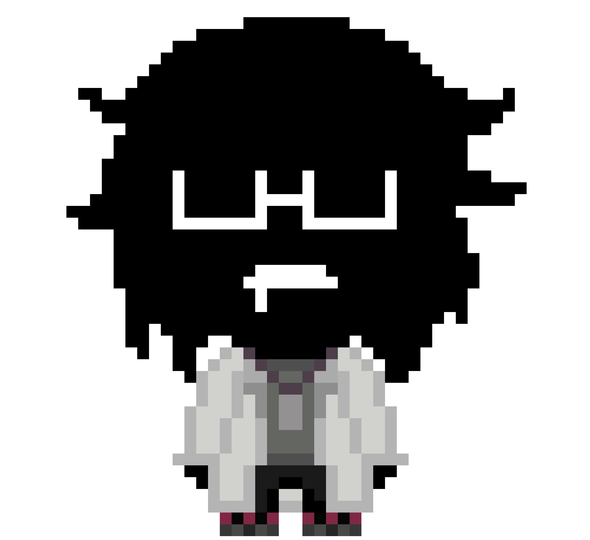
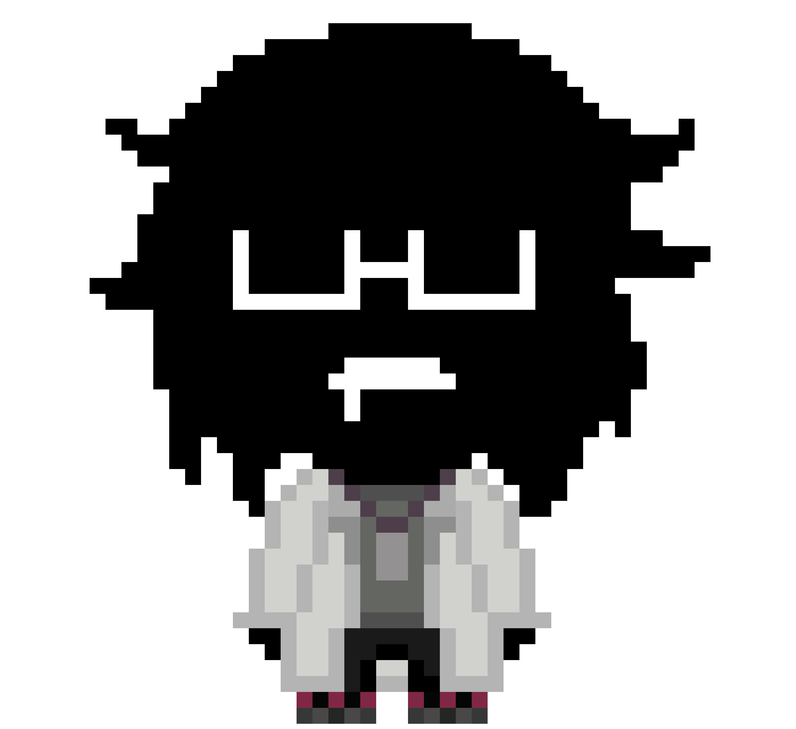
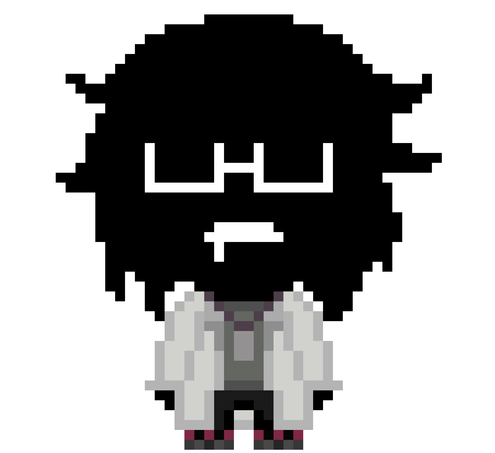

:/ДЕЛО 6

:/ДЕЛО 6

|
/
|
:/ДЕЛО 6

|
/
работник scp фонда, которого признали аномалией, но каким то образом позволили работать ему как исследователю. удивительным образом, всё вокруг скорее подстилается под его интересы и все что ему надо, сходит ему с рук.
светский дедуля со своими заскоками, но не сумасшедший. несмотря на то как он выглядит, он ведет он себя довольно прилично. его работа заключается в изучении вещества, найденного возле неизвестного портала, так как оно схоже по своему составу с ним самим, ака ему может быть виднее. после знакомства с 4 предпологал, что это может быть его частью, ибо узнал от него о копиях и что портал был изначально открыт им.
с 4 предпологал, что это может быть его частью, ибо узнал от него о копиях и что портал был изначально открыт им.
правда недавно 6 узнал, что сходства в материи 6 и 4 вообще не наблюдается. пока ЕМУ не известно, чем является вещество(?) и как оно связано с копией номер 6.
однажды 4 осваивая возможности телепортации, случайно открыл портал в кабинет 6, где тот его встретил не самым приятным образом. направил на него швабру(видимо первое что попалось). но из за умения 4 располагать к себе людей, они довольно быстро разговорились, да и для 6 он был научным интересом и возможно ответом на его вопрос “может ли быть та субстанция в банке частью 4?”. позже о находке 6 уже сообщил 4 и нам.
( по имеющимся данным есть подозрения, что МЫ не знаем, существует ли вообще наша версия 6 или нет. есть теория о том, что после каждой переписи вселенной(или же откате времени) его по какой то причине, кидает между реальностями. но это происходит незаметно. но известно точно, что он живет в временной петле, даже сам не зная этого. точный механизм не понятен, потому что как наблюдателю из нашей вселенной, не понятно как это выглядит с обратной стороны, зачем, и по какой причине. вероятно на эти вопросы получится ответить более точно в будущем.)
- он плохо разбирается в новой технике, он еле-еле может поднять трубку или написать 4.
-из-за того, что он работает ночью, а днём спит, он не успевает попасть в столовую и вечно голодный, но добрые сотрудники ему часто у двери оставляют какую-нибудь еду в пластмассовых коробочках. 4-й носит ему сэндвичи.
-он очень любит зелёный цвет.
-он живёт у себя в кабинете, у него нет дома.
-он часто играет в шахматы с 4-м. иногда он жульничает. как именно? мы не говорим об этом.
-вероятно если бы 6 был знаком с кем то другим из КОСМОС он бы узнал их.
-он крайне недоверчив, переубедить его сложно.